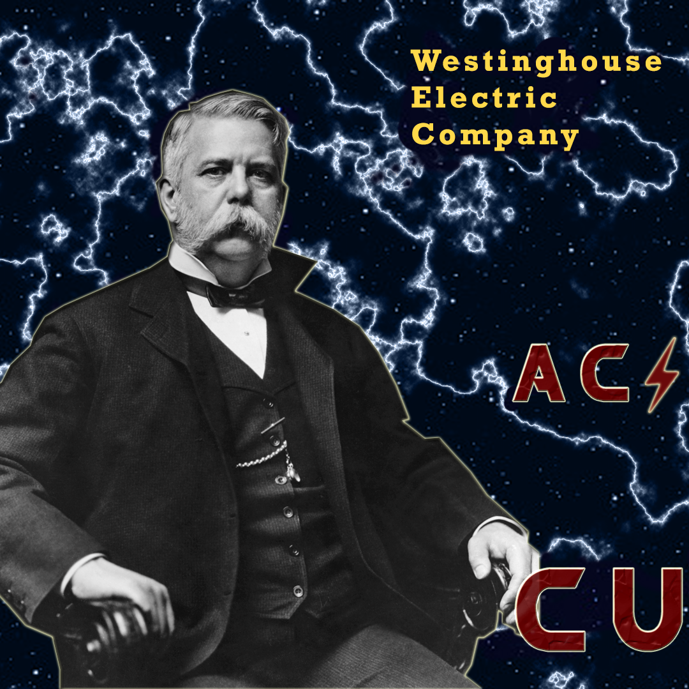

Война Токов. Часть ⚡⚡⚡: Конец войны

Эксперименты Брауна “доказали” опасность переменного тока и победа Эдисона была уже не за горами. Однако, вскоре ученые начали критиковать Брауна, обвиняя его в подлоге и сговоре с Эдисоном. Война токов из противостояния видов электричества переросла в полноценный конфликт идеологий. Эдисон и Браун упорно пытались очернить репутацию переменного тока.
>В это же время власти впечатленные Брауном, предложили использование переменного для казни. Однако, первая же попытка не увенчалась успехом, рабочие неверно оценили напряжение необходимое для убийства человека. Примерно в это же время раскрылась правда о сговоре Брауна и Эдисона, что подмочило его репутацию, однако это не остановило его “крестовый поход”.
>В октябре 1889 на оживленной улице Нью-Йорка на глазах у прохожих погиб Джон Феккс. Он чинил линию передач и, случайно коснувшись провода под высоким напряжением, мгновенно погиб. Это еще сильнее ударило по переменному току. В прессе начали публиковаться многочисленные статьи о смерти, проникающие в дома в виде переменного тока. Вестингауз попытался опровергнуть их заявив, что напряжение в домах значительно ниже и от переменного тока в год умирает всего 5 человек, в то время как от машин и газового освещения погибает до 87 человек. Однако, его компания не увенчалась успехом. После недолгого совещания правительство Нью-Йорка решило обрезать провода и зиму 1889 город провел во тьме.
Несмотря на провал Вестингауза война токов окончилась не в пользу Эдисона. Он отошел от дел, а его компания получив свободу начала разработку сетей переменного тока. В 1892 году без ведома Эдисона она объединилась с конкурентами и сформировала General Electric, которая по сей день успешно конкурирует с оправившейся от критики Westinghouse Electric Company. Можно сказать, что хотя Тесла и не участвовал напрямую в этом противостоянии его творение все же восторжествовало над постоянным током Эдисона. Таким образом, война токов завершилась безоговорочной победой переменного тока.
Article: Quasar
Preview: Quantum